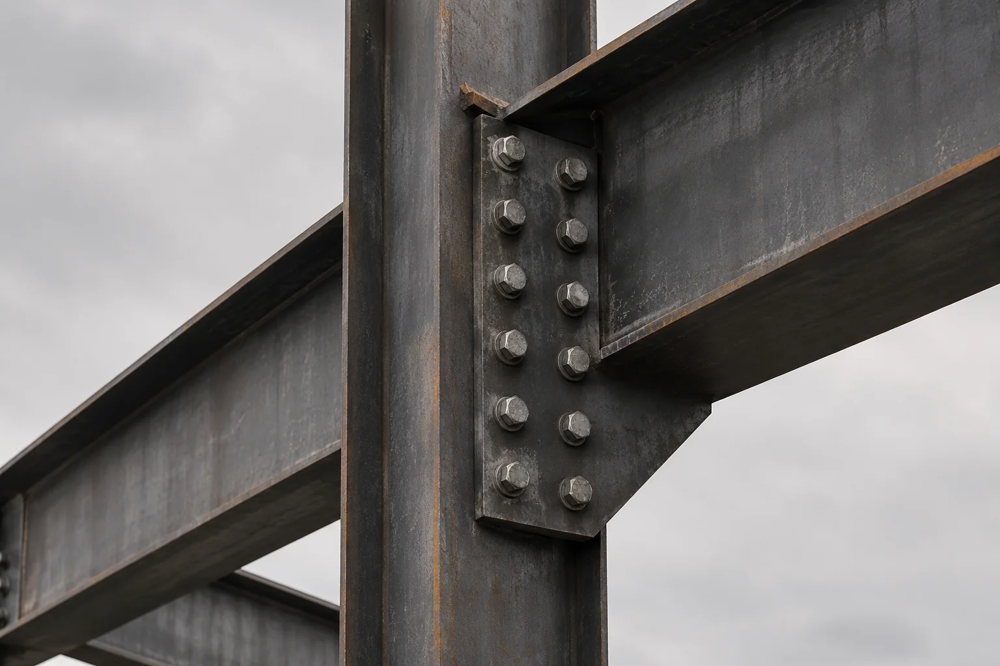

Каркасы зданий
Колонны, ригели и связи образуют несущую систему. Состав элементов определяет проект.

Стальные каркасы, фермы, балки и узлы по проекту заказчика.
Колонны, ригели и связи образуют несущую систему. Состав элементов определяет проект.

Стропильные и подстропильные фермы, сварные балки, прогоны и ригели. Изготовление по чертежам КМ и КМД.
Анкерные группы и узлы по проекту. Разработка чертежей КМ и КМД по техническому заданию.
Технологические площадки, переходные галереи и опорные конструкции. Параметры и покрытие определяются условиями объекта.